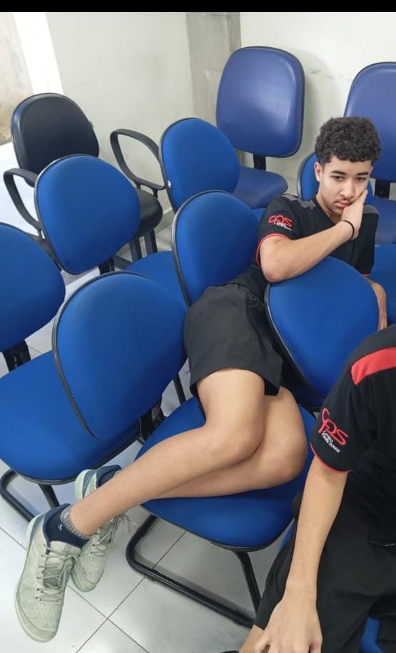

Allan não gosta que fale, mas ele é um menino muito estudioso, como podemos ver na imagem a seguir:
A unica coisa que eu pra falar é que ele é meu pato

Ele é daora, pena que mora no refugio
O Allan é um cara gente boa, bastante amigável na maioria das vezes e sempre tá com sono

Nome: Allan
Motivo: Procurado por atentado ao pudor .
Recompensa: 1 coxinha e um suco de uva.
ninguem sabe quem era a mulher da nota de 100, Allan então cumpre melhor o papel


Ele é meio marginal e delinquente às vezes... Principalmente quando resolve jogar e usar o celular no meio da aula